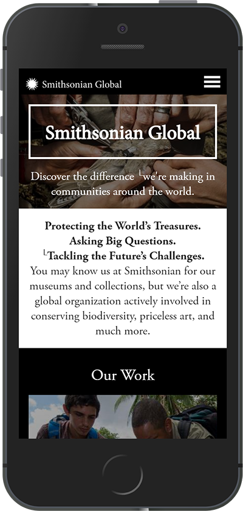

Contrast
Simthsonian Global
In Animal Farm all the animals were equal but some were more equal than others. In a website, not everything you see is as imporatant as other things. To give some element weight over another item, it must do somehting to catch your eye. This is where contrast comes into play. Contrast may demonstrated by being a bigger size or a more intense color. Like the other elements we have discussed this assignment, contrast is an intuitive way to communicate with your user. In this particular example, the objective of Smithsonian Global is to make an impact in the world. The reflect that value by having stark contast in the visual presentation of their website. There is no color combination that contrasts more than black and white. In this subtle way they are suggesting that the difference that they make in the world is as impactful as black to white.